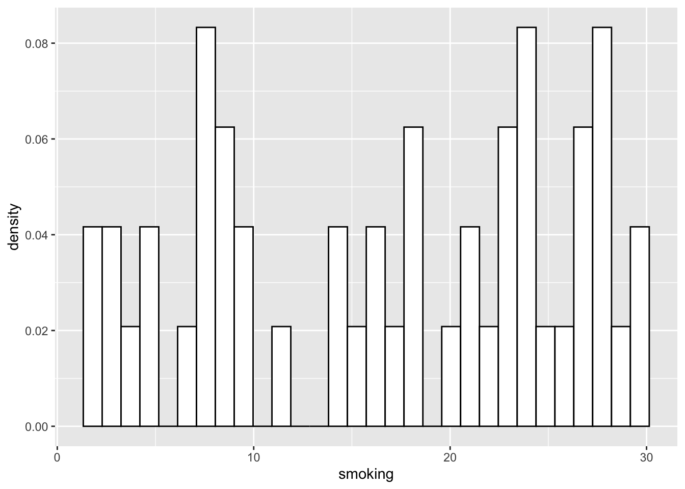
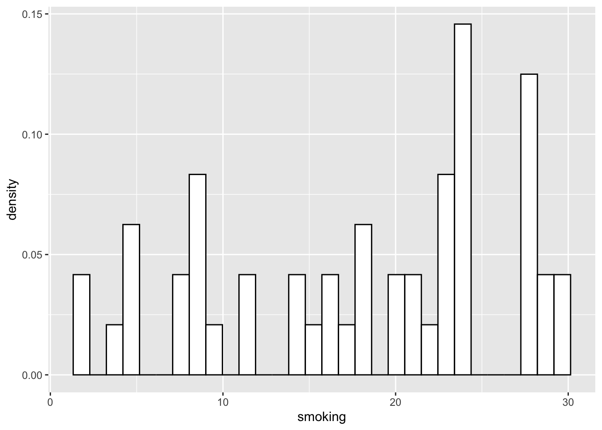
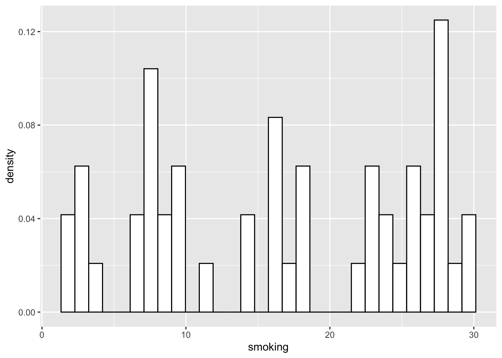
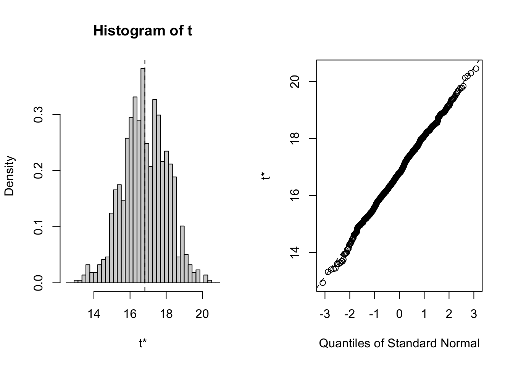
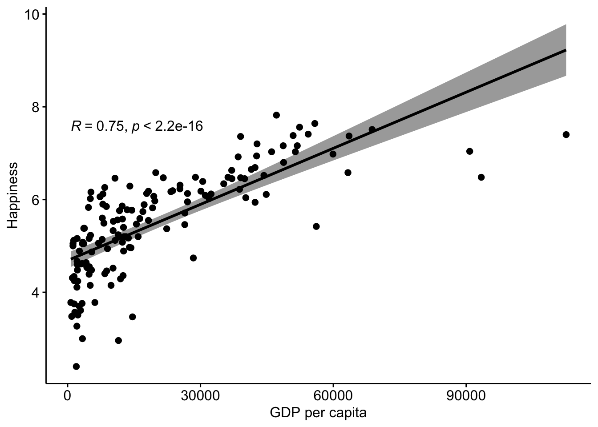
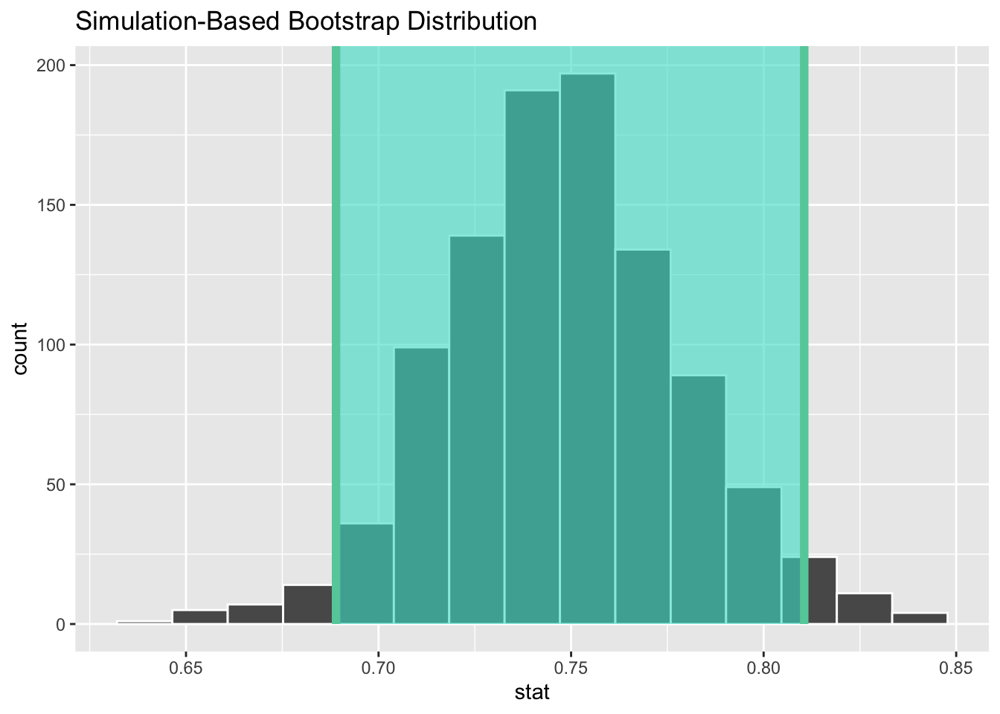
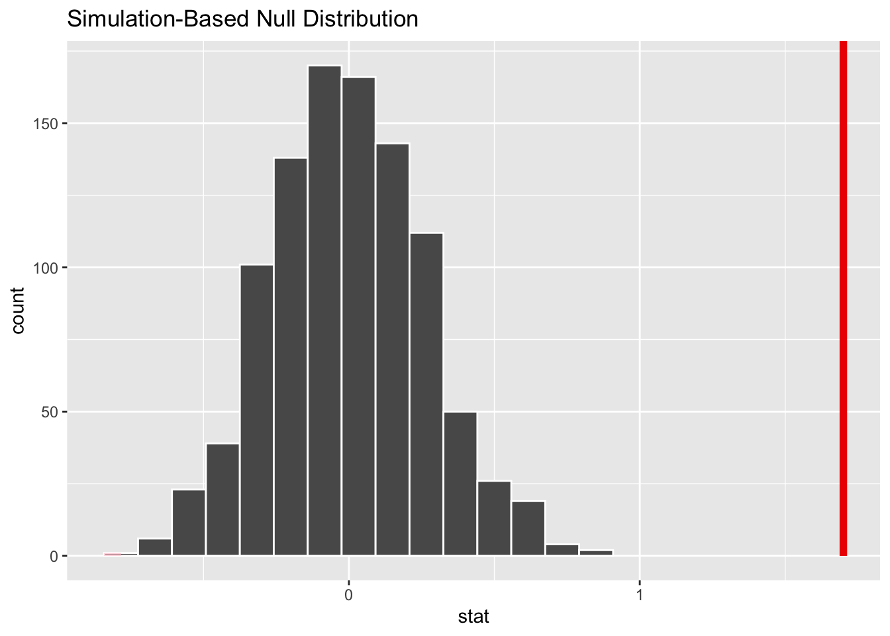

Chapter 7 Introduction to Bootstrapping
This Chapter relates to the second part of Lecture 6. In this chapter, you will learn the core concepts of bootstrapping. That is, creating synthetic sampling distributions through multiple resampling (with replacement) of a single sample.
The basic process is fairly simple, once you have your original sample, and has the following characteristics:
- A bootstrap sample has an equal probability of randomly drawing any of the original sample elements (data points).
- Each element can be selected more than once - because the sample is done with replacement.
- Each resampled data set (the new sample) is the same size as the original one.
First, I will demonstrate the basic principle.
Recall from the last chapter that there was a simulated data set of 498 people, with variables representing smoking, biking, and heart disease.
We treated this as the population and then sampled from it to demonstrate uncertainty at different sample sizes.
So, let’s take the sample of 50 that we drew from that ‘population’ of 498, and imagine that we got this sample by (for example) doing a survey of the population (of 498), and this is our data set for analysis.
Because this chapter now draws its own sample rather than reusing the one still in memory from Chapter 6, the exact numbers below may land somewhere slightly different from what we saw there — same unseeded variation as always, not a new inconsistency.
First we will remind ourselves of the properties and distribution of our sample, the median, mean, and distribution:
## [1] 14.03561## [1] 15.15627
Ok, there we go. Remember, this sample is our ‘data set’ for analysis. Remember, it represents a sample of 50 cases from a population of 498.
We know the median and mean, but we have no real indication of the uncertainty in those estimates. What I mean is, without information about the population mean and median (which of course we would not have in a real-life sampling situation), we cannot know how close the sample median and mean are to the population mean and median.
In order to estimate that information, we will eventually use the bootstrap method. For now, we are just going to demonstrate the basic idea.
So, what we do now is draw another random sample of 50. However, we don’t draw it from the population, we instead draw the new sample of 50 from our existing sample of 50.
That sounds weird to many people, and at first they often say ‘but how can it be different from your original 50??’. The trick is that each time we draw a data point, we replace it back, so we are always drawing our sample from the full 50. This is called sampling with replacement.
In this way, the new sample can only contain values which were in the original sample, but can contain different frequencies of those values. Or in other words, each value can occur many different times, and that number of times may be different to the original sample. So the distribution of values in this new sample will be different to the original sample, and the statistics will therefore also be different.
Let’s draw this new sample, take the median and mean of the sample, and plot it:
## # A tibble: 50 × 4
## ...1 biking smoking heart.disease
## <dbl> <dbl> <dbl> <dbl>
## 1 464 73.8 0.642 0.552
## 2 213 15.5 18.8 14.9
## 3 275 32.2 5.02 9.90
## 4 434 36.3 8.25 9.78
## 5 49 28.6 12.5 11.4
## 6 429 35.7 9.40 9.57
## 7 232 10.4 16.0 14.1
## 8 87 31.0 29.0 13.8
## 9 403 38.2 4.25 7.26
## 10 269 42.6 26.3 11.6
## # ℹ 40 more rows## [1] 14.10165## [1] 15.37759
Marvelous! Now, for the purpose of example, let’s draw two more of these resamples from the original 50, take their median and mean, and plot the distributions…
## # A tibble: 50 × 4
## ...1 biking smoking heart.disease
## <dbl> <dbl> <dbl> <dbl>
## 1 372 15.3 22.4 17.3
## 2 260 37.7 26.3 11.2
## 3 158 54.1 20.4 8.05
## 4 232 10.4 16.0 14.1
## 5 405 12.9 27.0 18.6
## 6 240 21.6 9.35 14.0
## 7 309 60.0 4.29 4.11
## 8 429 35.7 9.40 9.57
## 9 362 49.9 3.86 5.33
## 10 58 27.6 4.39 10.9
## # ℹ 40 more rows## [1] 13.96957## [1] 14.70367
## # A tibble: 50 × 4
## ...1 biking smoking heart.disease
## <dbl> <dbl> <dbl> <dbl>
## 1 146 71.5 21.6 3.67
## 2 207 67.1 5.82 2.55
## 3 493 21.6 7.60 12.4
## 4 458 68.7 22.4 5.36
## 5 190 32.1 12.5 11.5
## 6 196 70.7 22.7 2.71
## 7 493 21.6 7.60 12.4
## 8 140 16.3 3.46 13.6
## 9 158 54.1 20.4 8.05
## 10 213 15.5 18.8 14.9
## # ℹ 40 more rows## [1] 13.8539## [1] 14.38825
Now, if we return to the slides, we can build a table using these mean and median values. Of course, the slide deck will have slightly different values, since it’s based on a different run of the resampling process, but the principle is the same.
So, this is the basic idea of bootstrapping. We sample with replacement from our original sample, many many times. We did 3 here manually, but we generally use a program to do this many more times, such as a thousand or more.
7.1 Bootstrapping in the Context of Previous Examples
To further reinforce the point, let’s now place ourselves in the position of three different researchers, each of varying levels of enthusiasm, and all three are researching the same population of 498 people that we have already explored in the last few examples.
Researcher 1 is a little like me as a Ph.D. student, and maybe more interested in ‘experiencing life’. So, he has little time to actually collect data, and not much more enthusiasm for it. In the end, he manages to take a sample of 10 people from the population of 498.
Researcher 2 is a bit more enthusiastic, and gets a sample of 50.
Researcher 3 is fairly conscientious, and takes a sample of 200 from the population of 498.
Now, what we can do, is run 1000 bootstrap replications of each of these varying-sized subsamples of the population, to see what might happen:
First, the 10:
##
## ORDINARY NONPARAMETRIC BOOTSTRAP
##
##
## Call:
## boot(data = sub.10, statistic = f1, R = 1000)
##
##
## Bootstrap Statistics :
## original bias std. error
## t1* 17.21158 0.01989146 2.190944
## BOOTSTRAP CONFIDENCE INTERVAL CALCULATIONS
## Based on 1000 bootstrap replicates
##
## CALL :
## boot.ci(boot.out = results, type = "norm")
##
## Intervals :
## Level Normal
## 95% (12.90, 21.49 )
## Calculations and Intervals on Original ScaleNow let’s do it for the other two subsamples of n=50, and n=200
##
## ORDINARY NONPARAMETRIC BOOTSTRAP
##
##
## Call:
## boot(data = sub.50, statistic = f1, R = 1000)
##
##
## Bootstrap Statistics :
## original bias std. error
## t1* 15.15627 0.05073014 1.252665
## BOOTSTRAP CONFIDENCE INTERVAL CALCULATIONS
## Based on 1000 bootstrap replicates
##
## CALL :
## boot.ci(boot.out = results, type = "norm")
##
## Intervals :
## Level Normal
## 95% (12.65, 17.56 )
## Calculations and Intervals on Original Scale##
## ORDINARY NONPARAMETRIC BOOTSTRAP
##
##
## Call:
## boot(data = sub.200, statistic = f1, R = 1000)
##
##
## Bootstrap Statistics :
## original bias std. error
## t1* 16.26091 -0.0406118 0.6097286
## BOOTSTRAP CONFIDENCE INTERVAL CALCULATIONS
## Based on 1000 bootstrap replicates
##
## CALL :
## boot.ci(boot.out = results, type = "norm")
##
## Intervals :
## Level Normal
## 95% (15.11, 17.50 )
## Calculations and Intervals on Original ScaleWe’ll now build a table with these values back in the slide deck. Again, remember the values in the slide deck will differ from these due to the randomness of the process.
7.1.1 Bootstrapping the Original Sample
Now, let’s shift our minds a bit, and consider that the data set of 498 actually represents a sample of a larger population (remember from the last chapter, it’s simulated, but meant to represent a sample from the population).
So, let’s bring in Researcher 4, the most conscientious of all. She is the one who manages to take a sample of 498 people from the population. And, finally, we can bootstrap the original full sample of 498:
##
## ORDINARY NONPARAMETRIC BOOTSTRAP
##
##
## Call:
## boot(data = Heart, statistic = f1, R = 1000)
##
##
## Bootstrap Statistics :
## original bias std. error
## t1* 15.43503 0.001437866 0.359051
## BOOTSTRAP CONFIDENCE INTERVAL CALCULATIONS
## Based on 1000 bootstrap replicates
##
## CALL :
## boot.ci(boot.out = results, type = "norm")
##
## Intervals :
## Level Normal
## 95% (14.73, 16.14 )
## Calculations and Intervals on Original ScaleThis is a very nice set of results, which can tell us many interesting things. So let’s go back to the slides…..
7.2 Bootstrapping Other Stuff…
We have so far only bootstrapped the mean. However, the basic principle can be applied to virtually any statistical estimate. So, we can revisit some of our prior analyses, and use the bootstrap method to quantify the uncertainty in the estimates that we previously accepted without really thinking too hard about them.
7.2.1 Correlations
First, let’s revisit our recent correlation analysis of Happiness and GDP per capita.
## # A tibble: 6 × 4
## Country Happiness GDPpc Pop
## <chr> <dbl> <dbl> <dbl>
## 1 Afghanistan 2.4 1971 38972236
## 2 Albania 5.2 13192 2866850
## 3 Algeria 5.12 10735 43451668
## 4 American Samoa NA NA 46216
## 5 Andorra NA NA 77723
## 6 Angola NA 6110 33428490## vars n mean sd median trimmed mad
## Country* 1 249 125.00 72.02 125.00 125.00 91.92
## Happiness 2 153 5.49 1.12 5.53 5.52 1.16
## GDPpc 3 197 20463.88 20717.34 12655.00 17037.01 13338.95
## Pop 4 242 59178643.60 331869505.09 5596196.00 12318073.38 8185922.38
## min max range skew kurtosis se
## Country* 1.0 2.490000e+02 2.480000e+02 0.00 -1.21 4.56
## Happiness 2.4 7.820000e+00 5.420000e+00 -0.26 -0.38 0.09
## GDPpc 731.0 1.125570e+05 1.118260e+05 1.58 2.55 1476.05
## Pop 809.0 4.663087e+09 4.663086e+09 11.65 152.44 21333379.77If we run the same analysis as in Chapter 5, we’ll get the same results: Correlation R = 0.75

Now, let’s take uncertainty into account, by bootstrapping that correlation and creating some confidence intervals.

## # A tibble: 1 × 2
## lower_ci upper_ci
## <dbl> <dbl>
## 1 0.689 0.811## Response: Happiness (numeric)
## Explanatory: GDPpc (numeric)
## # A tibble: 1 × 1
## stat
## <dbl>
## 1 0.745So, you can see the correlation is 0.75 with a 95% confidence interval of 0.69 - 0.81
Now, let’s extend this to the multiple regression case we have previously used in Chapter 5, examining the relationships between smoking, biking, and heart disease.
## # A tibble: 6 × 4
## ...1 biking smoking heart.disease
## <dbl> <dbl> <dbl> <dbl>
## 1 1 30.8 10.9 11.8
## 2 2 65.1 2.22 2.85
## 3 3 1.96 17.6 17.2
## 4 4 44.8 2.80 6.82
## 5 5 69.4 16.0 4.06
## 6 6 54.4 29.3 9.55## vars n mean sd median trimmed mad min max range
## ...1 1 498 249.50 143.90 249.50 249.50 184.58 1.00 498.00 497.00
## biking 2 498 37.79 21.48 35.82 37.71 27.51 1.12 74.91 73.79
## smoking 3 498 15.44 8.29 15.81 15.47 10.86 0.53 29.95 29.42
## heart.disease 4 498 10.17 4.57 10.39 10.18 5.42 0.55 20.45 19.90
## skew kurtosis se
## ...1 0.00 -1.21 6.45
## biking 0.07 -1.22 0.96
## smoking -0.04 -1.12 0.37
## heart.disease -0.03 -0.93 0.20Here, we need to calculate multiple confidence intervals as we have multiple estimates.

## # A tibble: 3 × 2
## term estimate
## <chr> <dbl>
## 1 intercept 15.0
## 2 smoking 0.178
## 3 biking -0.200## # A tibble: 3 × 3
## term lower_ci upper_ci
## <chr> <dbl> <dbl>
## 1 biking -0.203 -0.197
## 2 intercept 14.8 15.1
## 3 smoking 0.171 0.186It’s worth reflecting on exactly what these confidence intervals mean, and to do so, we can move back to the slides…
7.3 Reading the literature
You’ll find bootstrapping in management papers in a few places, such as confidence intervals for statistics that have no convenient formula, and robustness checks. But by far the most common is mediation analysis: testing whether X affects Y through some mediator M. If a paper claims that transformational leadership raises performance by increasing employees’ engagement, or that a promotion boosts sales by changing how customers see the brand, it will almost certainly report a bootstrapped confidence interval for an “indirect effect.” This book doesn’t teach mediation, but you can read those results with what this chapter has already given you.
7.3.1 Where you’ll meet this
The indirect effect. A simple mediation model has two links: X to M (usually called a) and M to Y, holding X constant (b). The indirect effect is the product of the two, a × b. The trouble is that the sampling distribution of a product of two estimates is usually skewed rather than normal, so the older, formula-based tests of it are unreliable. The bootstrap gets round that exactly as this chapter did: resample the data thousands of times, calculate a × b in each resample, and take the middle 95% of those values as the confidence interval. So when a paper reports an indirect effect of 0.12 with a 95% bootstrap confidence interval of 0.04 to 0.21, based on 5,000 resamples, you know precisely what was done. The interval excludes zero, so the indirect effect is significant. Its width tells you how precisely it has been estimated, just as with any other interval.
What the bootstrap fixes, and what it doesn’t. The bootstrap solves a statistical problem: getting an honest interval for a quantity with an awkward distribution. It does nothing about the much bigger problem, which is that a mediation claim is a causal claim about two links. Even if X was randomly assigned in an experiment, M wasn’t, so the link from M to Y is exposed to every confounding problem in Chapter 4 (Bullock et al. 2010). And the bootstrap can’t create information the sample doesn’t contain. It resamples the data you have, so a small or unrepresentative sample stays small and unrepresentative however many times you resample it, as Researcher 1’s sample of 10 showed.
“Full” and “partial” mediation. Older papers, and some newer ones, follow a set of steps from Baron and Kenny (Baron and Kenny 1986), which among other things required a significant overall effect of X on Y before mediation could even be tested. That requirement is now widely rejected, and so is the habit of classifying results as “full” or “partial” mediation depending on whether the direct effect of X on Y remains significant (Zhao et al. 2010). Whether it does depends heavily on sample size, so “full mediation” is often just another way of saying “not enough data to detect the direct effect.” One further point from the same authors connects straight to the red flag in Section 5.6. A mediator that isn’t clearly distinct from X or from Y will appear to “fully mediate” almost automatically, so check its correlations in Table 1.
7.3.2 The connection back
A bootstrapped indirect effect is this chapter’s procedure applied to one particular number. Everything the chapter showed about bootstrap intervals applies: they describe the uncertainty that comes from sampling, they get narrower as the sample grows, and they rely entirely on the original sample being a fair picture of the population. What they can’t tell you is whether the causal story connecting X, M and Y is true.
7.3.3 Questions worth asking
- What is the causal story, link by link? What does the design do to support each link, and in particular the link from M to Y?
- Were X, M and Y measured at different times, or all at once? If all at once, why should we believe the order the paper proposes?
- How was the indirect effect tested? With a bootstrap confidence interval, or with an older test?
- How wide is the interval? Does it include indirect effects too small to matter?
- Is “full mediation” doing any real work? Or would a larger sample have found a direct effect too?
7.3.4 One red flag
Beware the single-survey mediation model. One questionnaire, completed by one person at one moment, measures three constructs, and the paper arranges them as X → M → Y with a bootstrapped indirect effect as its headline result. The statistics can’t tell you which way round the arrows go: the same data are usually fitted just as well by rearranging the three variables into a different order, and the choice of order came from the theory, not the data. Add the common-method concerns from Chapter 5, and a significant indirect effect in a design like this tells you very little about mechanism. It may still be the best evidence available, but it should be presented as consistent with the proposed process, not as a demonstration of it.
7.3.5 If you want to read more
Xinshu Zhao, John Lynch and Qimei Chen’s “Reconsidering Baron and Kenny” (Zhao et al. 2010) was written for consumer researchers as a non-technical guide to what mediation analysis can and can’t show. It remains the most useful short account I know, and it will save you from several common mistakes if you ever run one yourself.